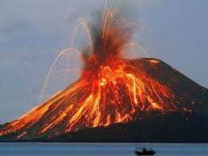

Nama : Dian Situmorang
NPM : 23451081
Program Studi : Teknik Informatika
Alamat : Jl.Jambore.IX
Instagram : klik disini untuk melihat profil saya
Saya berasal dari Samosir dan melanjutkan pendidikan di binjai
Saya Anak pertama dari 4 bersaudara
Disini saya akan menceritakan sedikit tentang kampung saya SAMOSIR
Berada di tengah-tengah Danau Toba, Sumatera Utara, Indonesia, Pulau Samosir memiliki keindahan yang jarang dimiliki pulau-pulau lainnya. Pulau Samosir dianggap sebagai salah satu pulau vulkanik terbesar di dunia, dengan luas sekitar 630 km persegi. Sejarah Pulau Samosir terkait erat dengan budaya salah satu suku asli Sumatera Utara, yaitu suku Batak Toba.
Gambar pulau SAMOSIR
 Pulau Samosir terbentuk dari letusan besar Gunung Toba, salah satu letusan supervulkan terbesar dalam sejarah bumi sekitar 74.000 tahun yang lalu.
Pulau Samosir terbentuk dari letusan besar Gunung Toba, salah satu letusan supervulkan terbesar dalam sejarah bumi sekitar 74.000 tahun yang lalu.
LETUSAN GUNUNG TOBA
Pulau Samosir adalah contoh yang menarik dari bagaimana sejarah geologis dapat membentuk lingkungan fisik yang unik, sementara budaya dan tradisi suku Batak Toba telah mengisi pulau ini dengan kehidupan dan warna. Perkembangan agama Kristen dan industri pariwisata juga telah memengaruhi kehidupan dan ekonomi pulau ini. Pulau Samosir tetap menjadi salah satu tujuan wisata yang paling populer di Indonesia dalam menawarkan pengalaman budaya, sejarah, serta alam yang luar biasa bagi para pengunjungnya.
SUKU BATAK DI SAMOSIR
.jpeg)
Menurut Giyanto, Suku Batak memiliki sebelas subsuku yang tercatat. Subsuku tersebut meliputi, Batak Karo, Batak Toba, Batak Papa, Batak Simalungun, Batak Angkola, Batak Mandailing, Batak Dairi, Batak Nias, Batak Alas, Batak Gayo, dan Batak Kluet. "Dari subsuku bangsa tersebut ,ada lima subsuku bangsa yang menjadi subetnis utama Batak, yaitu Toba, Pakpak, Simalungun, Karo, dan Mandailing," terang Giyanto. Subsuku lainnya diketahui memisahkan diri dan membentuk identitas baru menjadi suku berbeda. Misalnya, subsuku Gayo yang menjadi Suku Gayo dan subsuku Nias yang menjadi Suku Nias.